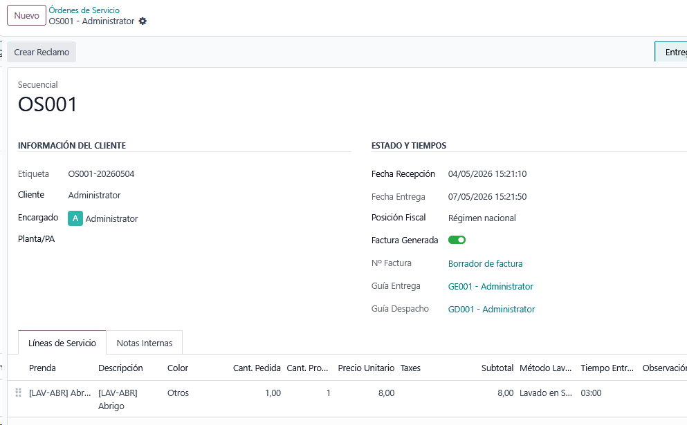
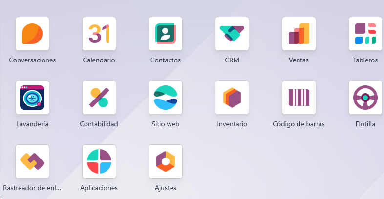
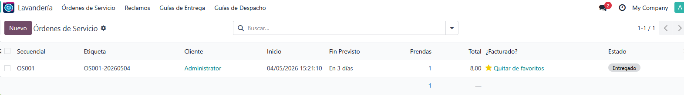
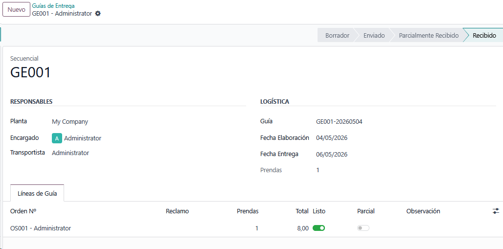

Installer module for the complete Ecuadorian laundry management system on Odoo 18.
Includes configuration, management workflows and setup data required for the laundry application.
Developed by LeadSolutions Cia. Ltda..
Complete service order management with garment tracking by type, color, washing method, and quantity. Automatic company sequence numbering.


Order dashboard with kanban grouped by stage, pending activities indicators, and invoice status badges on each card.
Pivot and graph views for cross-analysis of orders, claims, and guides by customer, state, plant, and totals.


Customer delivery guide tracking with full lifecycle traceability and automatic dispatch guide creation.
Note: This module installs the full laundry management workflow and is intended to be used with Laundry Configuration as a base dependency.